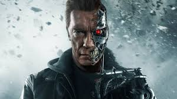
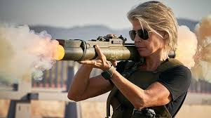

Personajes
Terminator
Los terminators o también exterminadores son robots autónomos humanoides de ficción, de la franquicia homónima creada por James Cameron, concebidos como soldados virtualmente indestructibles en el campo de batalla. Son los asesinos predilectos de Skynet para acabar con sus objetivos.
Creación del concepto
James Cameron, en ese entonces un joven y prometedor director de cine, se encontraba en un hotel en Roma con fiebre alta y mareos. Esa misma noche, Cameron tuvo una pesadilla en la que un robot similar a un esqueleto emergía de una bola de fuego. Al despertarse, realizó esbozos de lo que hoy en día se reconoce como el terminator y lo incluyó en el argumento de su nueva película.
Cameron presentó su visión de máquina asesina por primera vez en su película The Terminator en 1984, que fue un éxito de taquilla, como un único cyborg llamado propiamente Terminator, interpretado por Arnold Schwarzenegger. Más adelante, cuando Cameron transformó su película en una saga, fue presentando con cada nuevo filme a nuevos modelos de terminators, identificándolos con nuevas características y nombres.
Caracteristicas
Los terminators son «organismos cibernéticos» muy resistentes en combate y diseñados para la infiltración y el asesinato. Su versatilidad va desde la imitación de voz, maestría en diversas tácticas de combate y armamento, velocidad y fuerza superior a un humano y capacidad de aprendizaje casi infinita, llegando, incluso, a comprender a profundidad las emociones humanas. Esto último es también una gran debilidad, ya que cualquier terminator que entable contactos con algún humano y se mezcle con sus costumbres y entorno, se volverá de cierta manera más humano y limitará su eficiencia.
Sarah Connor
Sarah Jeanette Connor (1965) es un personaje ficticio, heroína en las primeras dos películas de Terminator y posteriormente en Terminator Génesis, además de la serie de televisión llamada Terminator: The Sarah Connor Chronicles. En la película, el personaje es interpretado por las actrices Linda Hamilton y Emilia Clarke; mientras que en la serie es interpretada por Lena Headey.
Sarah Connor es una camarera joven que servía cafés y llevaba una vida normal, hasta que es perseguida por un asesino implacable, el Terminator T-800 modelo 101 de Cyberdyne Systems (interpretado por Arnold Schwarzenegger) por razones totalmente desconocidas para ella. El soldado que viaja desde el futuro, Kyle Reese (interpretado por Michael Biehn), al tiempo que la rescata del Terminator, le explica que en el futuro una inteligencia artificial llamada Skynet será creada por ingenieros militares de software para tomar decisiones estratégicas de defensa.
Kyle Reese
 Kyle Reese es un personaje principal y protagonista en la primera película de Terminator, padre de John Connor, y el primer amor de Sarah Connor.
Kyle nació en 2002, es decir posteriormente al día del Juicio Final y la caída de la civilización humana, un niño criado entre las ruinas, a
sabiendas de una vida con miedo y la amenaza constante de exterminio.
Kyle Reese es un personaje principal y protagonista en la primera película de Terminator, padre de John Connor, y el primer amor de Sarah Connor.
Kyle nació en 2002, es decir posteriormente al día del Juicio Final y la caída de la civilización humana, un niño criado entre las ruinas, a
sabiendas de una vida con miedo y la amenaza constante de exterminio.
Se afilia a la resistencia a una edad temprana, luego de ser rescatado de los campos de concentración por John Connor donde era obligado a trabajar cargando cadáveres. Reese luchó con el batallón nº132 con Perry de 2021 hasta el 2027. A raíz de las ofensivas en Oregón y Nuevo México, Reese fue asignado para asegurar la supervivencia de John Connor de 2027 a 2029. Kyle llevaba una foto de Sarah Connor, que le dio John (Kyle no sabía por qué), como amuleto. Creció su aprendizaje sobre la legendaria Sarah Connor y cómo le enseñó a John a luchar; a través de esta foto, Kyle llegó a amar a Sarah Connor.
En 2029 al destruir el sistema de defensa de Skynet y ganar la guerra, descubren el plan de Skynet con el equipo de desplazamiento temporal y el Exterminador (el cual ya había sido enviado), ante lo cual Reese se ofrece voluntario para ser enviado atrás en el tiempo a 1984, siendo seleccionado por John ya que era la única persona además de él que conocía el rostro de su madre, llegando el 12 de mayo a las 02:01, para proteger a Sarah Connor de la aniquilación.
Muere en 1984 protegiendo a Sarah Connor del esqueleto del exterminador, cumpliendo sin saber, su propósito, el cual menciona a Sarah ("sé que el padre de John murió antes de la guerra").